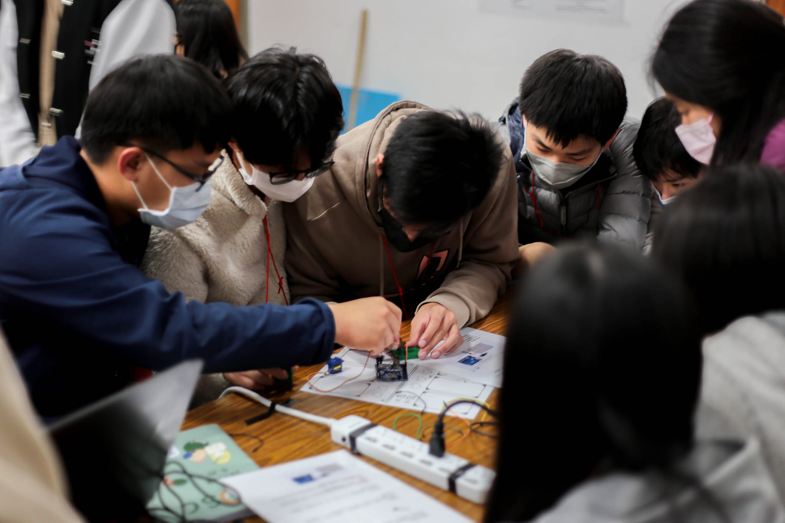

工科系是什麼？
或許有些人還很疑惑，小工、小珂跟小瑩身處的工程科學系到底是什麼樣的系所呢？
那現在我們要來跟各位介紹一下──工程科學系在做什麼？
工程科學系是涵蓋電機、機械和資訊三大領域的科系，我們會在大一大二學習這三個領域的基礎課程，像是力學、圖學、程式語言、電路設計、微處理器等。 除了理論知識的學習，也會有實作課程，讓學生更加熟悉上課所學。
在大一、大二具備了各領域的基礎能力之後，大三開始會選擇有興趣的領域去修習相關的課程，藉此更加深入認識該領域。 同時也會著手製作專題，將所學從紙張化為實體用在專題上，或藉此學習課本沒有傳授的知識。
工程科學系的出路很廣泛，從軟體到韌體再到硬體都可以勝任，也因為兼具各領域的基礎，很容易能跨領域發展， 或者成為不同領域間的溝通橋梁，都是業界不可多得的能力。
想知道學長姐們是怎麼變成這麼厲害的嗎？
快來報名成大工程科學研習營吧！
📘 電機領域
電子／電路、控制、電路設計、半導體設計、通訊、機器人設計
💻 資訊領域
程式設計、資料庫、網頁設計、作業系統、遊戲開發
⚙️ 機械領域
動／靜力學、圖學繪製、材料性質、熱力／熱傳學、流體力學、機械結構設計
我們的營隊
所謂的工程科學，不單單只是在學習工程的知識，而是著重於各領域的整合。
在這個時代裡，這是一項不可或缺的能力。
在這五天四夜裡，透過精心籌備的團隊活動與細心安排的專業演講，並且透過實際操作學以致用， 幫助你探索心中的科學夢，並引導你進一步實現科學夢。 讓書裡的知識不再無趣，讓知識充滿各個角落。
五天四夜的營隊，你不僅是這五天四夜，更讓你的夢想更進一步。
千萬不可錯過今年寒假「成大工程科學研習營」！！
工科松
小工、小珂跟小瑩在了解了工程科學系在做什麼之後，就要來到工科松， 用學到的知識加上動手做的能力，做出一個個精彩的成果！
工科松是營隊中的特色活動，也是各位學員能體驗並實踐工科系精神的最佳機會。 活動以跑關 🏃♂️🏃♀️ 的形式帶大家認識各領域小知識，並透過實作理解背後原理。
最後就是工科系最擅長的——Do Re Mi So 🪄！把看似無關的元素組合在一起 🧩， 讓不同小組來一場緊張刺激的對決！快來報名第 28th 成大工程科學研習營吧！
教授課
阿小、阿隊與阿員來到 ESC 的魔法世界後，對於魔法學院裡的一切都充滿好奇與期待。 「要是有一位學識淵博、閱歷豐富的傳奇魔法師🧙♂️來為我們解惑就好了……」 他們這麼想著。
就在這時，一道光芒閃爍，來自「人工智慧與多尺度模擬實驗室」的―― 游濟華資深魔法師加教授先生🧙♂️登場了！ 他將在營期間降臨，帶給各位見習魔法師們一堂融合智慧與創新的精彩課程。
雖以「力學」為主要研究領域，但他同時在「人工智慧」領域有深厚造詣， 並於系上開設 Python 程式設計相關課程。能兼具不同領域專長並相互結合， 正是 工科精神 的最佳體現 💯。
是不是已經迫不及待想知道這位資深魔法師將帶來什麼課程了呢？ 趕緊振臂高呼、呼朋引伴，揪團報名工科營，一同見證 游濟華教授🧙♂️的魔法魅力吧！✨